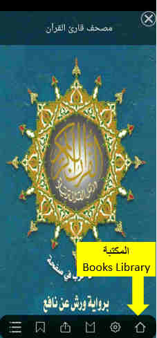
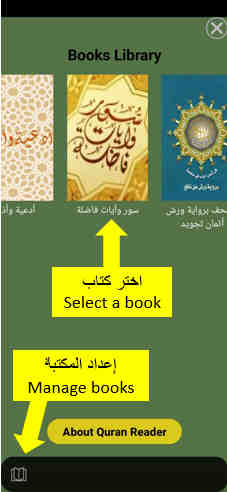
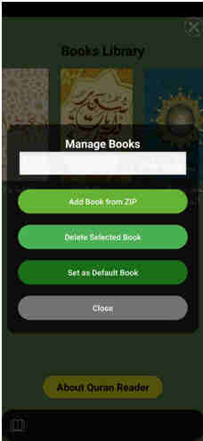

دليل للمستخدم الجديد
انقر على الشاشة لإظهار لوحةالتحكم
• اسحب يمينًا أو يسارًا للتنقل بين الصفحات.
• من القائمة، انقر على أيقونة العلامة لحفظ الصفحة.
• يمكنك رؤية العلامات من أيقونة العلامات.
• من القائمة، انقر على أيقونة الفهرس.
انقر على عناوين الفهرس لرأيةالعناوين.
من الشاشة الرئيسية إضغط على زر الإعدادات
يمكنك التحكم في الوضع الليلي، اختيار اتجاه التصفح عمودي/أفقي، ملئ الشاشة، ايقاف غلق الشاشة
من الشاشة الرئيسية، اضغط على الزر بصورة المنزل واختر كتابًا من القائمة.
انقر على صورة الكتاب لفتحه. يمكنك من زر الإعدادات بصورة كتاب أن تتحكم في المكتبة بإضافة كتاب، أو اختيار كتاب رئيسي، أو حذفه من المكتبة
   من الشاشة الرئيسية إضغط على زر المشاركة